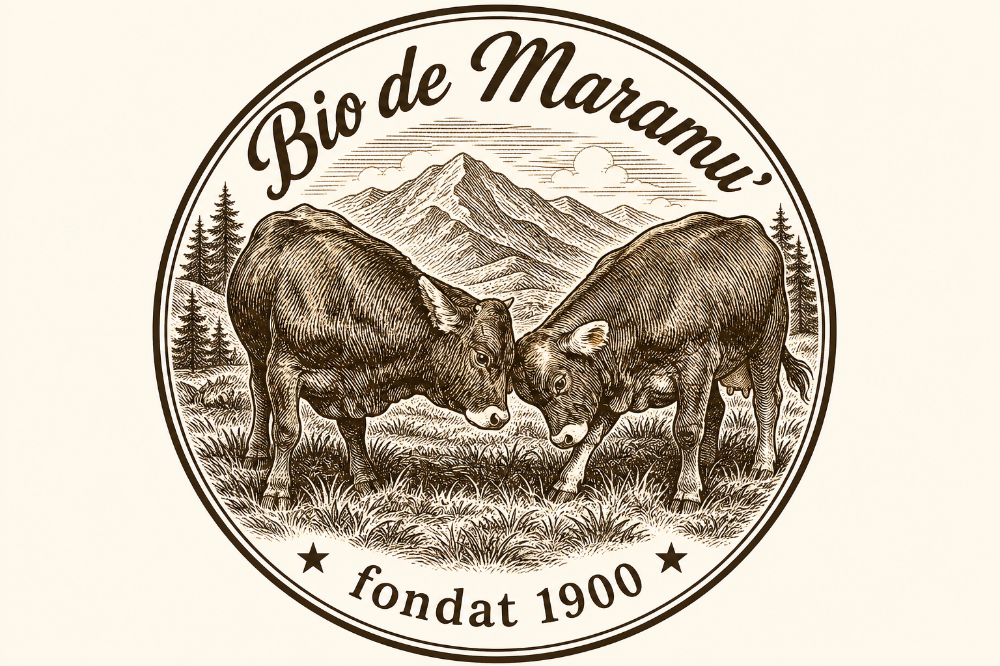

De la pajiștile Maramureșului,
pe masa ta.
Totul a început în 1900, pe dealurile Maramureșului, cu o cireadă de vaci Brună de Maramureș — o rasă de munte cu un lapte gras, bogat și aromat cum rar se mai găsește. Patru generații mai târziu, aceleași animale pasc aceleași poieni, păzite zi de zi de ciobanul nostru.
Din laptele lor facem brânză maturată natural, până la 36 de luni. Din animalele noastre, la maturitate, pregătim carne maturată „uscat" (dry-aged) — o delicatesă rară, cu gust profund. Totul fără grabă, fără scurtături, așa cum se făcea pe vremuri.
Bio de Maramu' nu e o fabrică. E o familie, un munte și niște animale iubite. Mulțumim că o duci mai departe, pe masa ta.
It began in 1900, on the hills of Maramureș, with a herd of Brown Maramureș cattle — a mountain breed whose milk is uncommonly rich and full-flavoured. Four generations on, the same animals graze the same meadows. From their milk we make naturally matured cheese (up to 36 months); from our cattle, rare dry-aged beef. No rush, no shortcuts — the old way.
— Familia Bio de Maramu'
Model — completează lotul, gramajul și data
Etichetarea alimentelor ambalate este obligatorie legal: denumire, ingrediente, alergeni, gramaj, producător, lot, termen de valabilitate. Păstrează același stil (hârtie kraft + sfoară) pe toate produsele.
Decupează · perforează · leagă cu sfoară
Produse de la ferma noastră · prețuri orientative
Prețuri orientative (RON), de calibrat la costul real cu un adaos de 2,5–3× pentru retail. Produsele provin din producție proprie / parteneri autorizați sanitar-veterinar. ✶ Fondat 1900 ✶